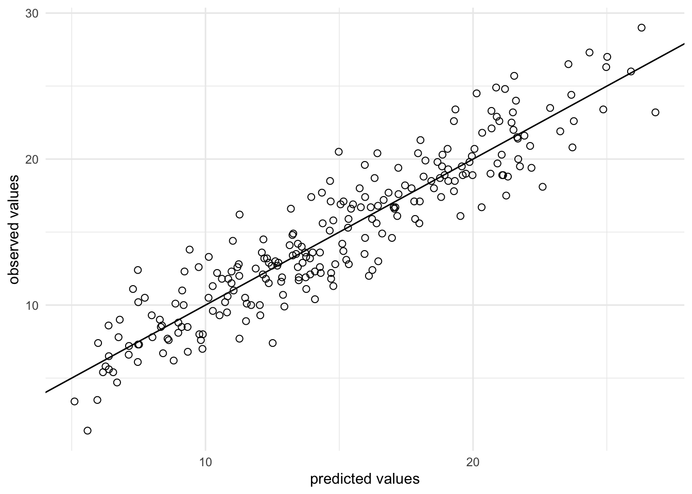

9 Assignments: Solutions
9.1 Assignment 1
This is the technical solution for the first assignment (i.e., it does not include any interpretations while your solutions should have some for each task). Also, plase note that there are multiple possible ways of solving the assignment.
9.1.1 Load data
library(tidyverse)
library(magrittr)
sales_data <- read.csv2("https://raw.githubusercontent.com/WU-RDS/RMA2024/main/data/Sales-2019-2020_A1.csv",
sep = ",", header = TRUE)
sales_data %<>%
mutate(date = as.Date(date, format = "%m/%d/%Y"))
sales_data$year <- format(sales_data$date, "%Y")
sales_data$order_value_EUR <- str_remove(sales_data$order_value_EUR,
",")
str(sales_data)## 'data.frame': 1000 obs. of 11 variables:
## $ country : chr "Sweden" "Finland" "Portugal" "Portugal" ...
## $ order_value_EUR: chr "17524.02" "116563.40" "296465.56" "74532.02" ...
## $ cost : chr "14122.61" "92807.78" "257480.34" "59752.32" ...
## $ date : Date, format: "2020-02-12" "2019-09-26" ...
## $ category : chr "Books" "Games" "Clothing" "Beauty" ...
## $ customer_name : chr "Goldner-Dibbert" "Hilll-Vandervort" "Larkin-Collier" "Hessel-Stiedemann" ...
## $ sales_manager : chr "Maxie Marrow" "Hube Corey" "Celine Tumasian" "Celine Tumasian" ...
## $ sales_rep : chr "Madelon Bront" "Wat Bowkley" "Smitty Culverhouse" "Aurelie Wren" ...
## $ device_type : chr "Mobile" "Mobile" "PC" "PC" ...
## $ order_id : chr "70-0511466" "28-6585323" "58-7703341" "14-6700183" ...
## $ year : chr "2020" "2019" "2019" "2020" ...First, you should check the data and make sure all variables are recorded correctly (correct variable types). From the output above you can see that order_value_EUR and cost, which are measured in ratio scales, are not numeric. Hence, you need to fix this:
sales_data$order_value_EUR = as.numeric(sales_data$order_value_EUR)
sales_data$cost = as.numeric(sales_data$cost)
head(sales_data, 2)9.1.2 Q1
To solve the first task of Question 1, ypu could simply use the table() and arrange() functions. By storing the table as data frame, you allow for using it in the bar plot as well:
ggplot(prop, aes(x = Var1, y = Freq)) + geom_col(aes(x = fct_reorder(Var1,
-Freq), fill = Freq)) + ylab("Number of transactions") +
xlab("Market") + theme_minimal() + theme(axis.text.x = element_text(angle = 45,
vjust = 1.1, hjust = 1))
For the next task, it was enough to use conditional frequencies by year (because this way, the audience sees the dynamics of transactions shares between markets in Y1 and Y2), or you could show the percentage changes for each market from Y1 to Y2.
## year
## country 2019 2020
## Austria 0.0 0.4
## Belgium 0.4 0.8
## Bulgaria 3.1 2.9
## Denmark 0.8 1.4
## Finland 4.5 4.3
## France 26.1 20.4
## Germany 2.2 2.5
## Ireland 3.1 5.5
## Italy 0.8 1.2
## Luxembourg 2.7 1.8
## Netherlands 2.2 3.3
## Portugal 21.0 26.7
## Spain 3.1 2.2
## Sweden 19.2 17.3
## UK 10.8 9.49.1.3 Q2
In this task, you should simply perform grouping and summarizing. The only difference is, in task 1, you only needed one grouping variable (year), while in task 2, you had to use country as well.
s1 <- sales_data %>% group_by(year) %>% summarize(annual_revenue = sum(order_value_EUR), avg_revenue = mean(order_value_EUR))
s1s2 <- sales_data %>% group_by(country, year) %>% summarize(annual_revenue = sum(order_value_EUR), avg_revenue = mean(order_value_EUR))
s2 <- as.data.frame(s2)
s2sales_data %>% filter(year == 2020) %>% group_by(country) %>%
ggplot(aes(x = fct_reorder(country, order_value_EUR),
y = order_value_EUR/1000)) + # to have nicely readable axis points
geom_boxplot(coef = 3) + labs(x = "Country",
y = "Sales (in tsd)") + theme_minimal() +
theme(axis.text.x = element_text(angle = 45, vjust = 1.1,
hjust = 1), plot.title = element_text(hjust = 0.5,
color = "#666666"), legend.position = "none")
9.1.4 Q3
Here are the two ways to solve Question 3: one with mutate() and another with summarize(). You can see that the second way is slightly more parsimonious.
Reminder: ROI is calculated as (( total revenue - total cost) / total cost ) * 100.
roi_mut <- sales_data %>%
group_by(country) %>%
mutate(roi_index = (sum(order_value_EUR) - sum(cost))/sum(cost) *
100) %>%
arrange(desc(roi_index)) %>%
select(country, roi_index) %>%
unique()
roi_mutroi_sum <- sales_data %>%
group_by(country) %>%
summarize(roi_index = (sum(order_value_EUR) - sum(cost))/sum(cost) *
100) %>%
arrange(desc(roi_index))
roi_sum9.1.5 Q4
This task is quite similar to the prevoius one and could be solved the same way:
categories <- sales_data %>%
group_by(category) %>%
mutate(profit = (sum(order_value_EUR) - sum(cost))) %>%
arrange(desc(profit)) %>%
select(category, profit) %>%
unique() %>%
head(5) # could also be done with summarize() like in the previous task
categories9.1.6 Q5
The tricky part in this task could be with “share of sales” - remember that share of sales is a share of revenue, gained by the device type, against the total revenue. This is not counting (i.e., prop.table() would not be the right way to solve this). Instead, you should use the sums of revenues per device type to obtain the shares:
device_sales <- sales_data %>%
group_by(device_type) %>%
summarise(sales = sum(order_value_EUR))
device_sales %>%
mutate(share_of_sales_percentage = round(sales/sum(sales),
4) * 100)9.2 Assignment 2
library(tidyverse)
library(psych)
library(Hmisc)
library(ggstatsplot)
options(scipen = 999)
sales_data <- read.table("https://raw.githubusercontent.com/IMSMWU/MRDA2018/master/data/assignment4.dat",
sep = "\t", header = TRUE) #read in data
sales_data$market_id <- 1:nrow(sales_data)
head(sales_data)## 'data.frame': 236 obs. of 5 variables:
## $ tv_adspend : num 68.6 136.6 14.5 214.6 285 ...
## $ online_adspend: num 10.3 29 44.3 26.2 13.9 74.9 31.1 14.1 24.5 13.9 ...
## $ radio_adspend : int 24 40 25 40 31 24 12 9 38 18 ...
## $ sales : num 8.6 15.8 11.8 17.1 17.4 24.4 19.5 4.7 20.7 19.5 ...
## $ market_id : int 1 2 3 4 5 6 7 8 9 10 ...9.2.1 Q1
In a first step, we specify the regression equation. In this case, sales is the dependent variable which is regressed on the different types of advertising expenditures that represent the independent variables for product i. Thus, the regression equation is:
\[sales_{i}=\beta_0 + \beta_1 * tv\_adspend_{i} + \beta_2 * online\_adspend_{i} + \beta_3 * radio\_adspend_{i} + \epsilon\]
This equation will be used later to turn the output of the regression analysis (namely the coefficients: \(\beta_0\) - intersect coefficient, and \(\beta_1\), \(\beta_2\), and \(\beta_3\) that represent the unknown relationship between sales and advertising expenditures on TV, online channels and radio, respectively) to the “managerial” form and draw marketing conclusions.
9.2.2 Q2
The descriptive statistics for the variables can be checked using the describe() function:
## vars n mean sd median trimmed mad min max range skew
## tv_adspend 1 236 148.65 89.77 141.85 147.45 117.27 1.1 299.6 298.5 0.12
## online_adspend 2 236 25.61 14.33 24.35 24.70 14.53 1.6 74.9 73.3 0.61
## radio_adspend 3 236 27.70 12.57 27.00 27.36 13.34 2.0 63.0 61.0 0.22
## sales 4 236 14.83 5.40 14.15 14.72 5.93 1.4 29.0 27.6 0.16
## market_id 5 236 118.50 68.27 118.50 118.50 87.47 1.0 236.0 235.0 0.00
## kurtosis se
## tv_adspend -1.26 5.84
## online_adspend 0.08 0.93
## radio_adspend -0.53 0.82
## sales -0.57 0.35
## market_id -1.22 4.44Inspecting the correlation matrix reveals that the sales variable is positively correlated with TV advertising and online advertising expenditures. The correlations among the independent variables appear to be low to moderate.
## sales tv_adspend online_adspend radio_adspend
## sales 1.00 0.78 0.54 -0.04
## tv_adspend 0.78 1.00 0.05 0.03
## online_adspend 0.54 0.05 1.00 -0.07
## radio_adspend -0.04 0.03 -0.07 1.00
##
## n= 236
##
##
## P
## sales tv_adspend online_adspend radio_adspend
## sales 0.0000 0.0000 0.5316
## tv_adspend 0.0000 0.4127 0.6735
## online_adspend 0.0000 0.4127 0.2790
## radio_adspend 0.5316 0.6735 0.2790Since we have continuous variables, we use scatterplots to investigate the relationship between sales and each of the predictor variables.
ggplot(sales_data, aes(x = tv_adspend, y = sales)) +
geom_point(shape = 1) + geom_smooth(method = "lm",
fill = "gray", color = "lavenderblush3", alpha = 0.1) +
theme_minimal()
ggplot(sales_data, aes(x = online_adspend, y = sales)) +
geom_point(shape = 1) + geom_smooth(method = "lm",
fill = "gray", color = "lavenderblush3", alpha = 0.1) +
theme_minimal()
ggplot(sales_data, aes(x = radio_adspend, y = sales)) +
geom_point(shape = 1) + geom_smooth(method = "lm",
fill = "gray", color = "lavenderblush3", alpha = 0.1) +
theme_minimal()

The plots including the fitted lines from a simple linear model already suggest that there might be a positive linear relationship between sales and TV- and online-advertising. However, there does not appear to be a strong relationship between sales and radio advertising.
Further steps include estimate of a multiple linear regression model in order to determine the relative influence of each type of advertising on sales.
9.2.3 Q3
The estimate the model, we will use the lm() function:
In a next step, we will investigate the results from the model using the summary() function.
##
## Call:
## lm(formula = sales ~ tv_adspend + online_adspend + radio_adspend,
## data = sales_data)
##
## Residuals:
## Min 1Q Median 3Q Max
## -5.1113 -1.4161 -0.0656 1.3233 5.5198
##
## Coefficients:
## Estimate Std. Error t value Pr(>|t|)
## (Intercept) 3.604140 0.460057 7.834 0.000000000000169 ***
## tv_adspend 0.045480 0.001491 30.508 < 0.0000000000000002 ***
## online_adspend 0.186859 0.009359 19.965 < 0.0000000000000002 ***
## radio_adspend -0.011469 0.010656 -1.076 0.283
## ---
## Signif. codes: 0 '***' 0.001 '**' 0.01 '*' 0.05 '.' 0.1 ' ' 1
##
## Residual standard error: 2.048 on 232 degrees of freedom
## Multiple R-squared: 0.8582, Adjusted R-squared: 0.8564
## F-statistic: 468.1 on 3 and 232 DF, p-value: < 0.00000000000000022For each of the individual predictors, we test the following hypothesis:
\[H_0: \beta_k=0\] \[H_1: \beta_k\ne0\]
where k denotes the number of the regression coefficient. In the present example, we reject the null hypothesis for tv_adspend and online_adspend, where we observe a significant effect (i.e., p-value < 0.05). However, we fail to reject the null for the “radio_adspend” variable (i.e., the effect is insignificant).
The interpretation of the coefficients is as follows:
- tv_adspend (β1): when TV advertising expenditures increase by 1000 Euro, sales will increase by 45 units;
- online_adspend (β2): when online advertising expenditures increase by 1000 Euro, sales will increase by 187 units;
- radio_adspend (β3): when radio advertising expenditures increase by 1000 Euro, sales will increase by -11 units (i.e., decrease by 11 units).
You should always provide a measure of uncertainty that is associated with the estimates. You could compute the confidence intervals around the coefficients using the confint() function.
## 2.5 % 97.5 %
## (Intercept) 2.69771633 4.51056393
## tv_adspend 0.04254244 0.04841668
## online_adspend 0.16841843 0.20529924
## radio_adspend -0.03246402 0.00952540The results show that, for example, the 95% confidence interval associated with coefficient capturing the effect of online advertising on sales is between 0.168 and 0.205.
Regarding the model fit, the R2 statistic tells us that approximately 86% of the variance can be explained by the model. This can be visualized as follows:
sales_data$yhat <- predict(linear_model)
ggplot(sales_data, aes(yhat, sales)) + geom_point(size = 2,
shape = 1) + scale_x_continuous(name = "predicted values") +
scale_y_continuous(name = "observed values") +
geom_abline(intercept = 0, slope = 1) + theme_minimal()
In addition, the output tells us that our predictions on average deviate from the observed values by 2048 units (see residual standard error, remember that the sales variable is measures in thousand units).
Of course, you could have also used the functions included in the ggstatsplot package to report the results from your regression model.
ggcoefstats(x = linear_model, k = 3, title = "Sales predicted by TV-, online-, & radio advertising")
9.2.4 Q4
Finally, we can predict the outcome for the given marketing mix using the following equation:
\[\hat{Sales} = \beta_0 + \beta_1*150 + \beta_2*26 + \beta_3*15 \]
The coefficients can be extracted from the summary of the linear model and used for quick sales value prediction as follows:
summary(linear_model)$coefficients[1, 1] + summary(linear_model)$coefficients[2,
1] * 150 + summary(linear_model)$coefficients[3,
1] * 26 + summary(linear_model)$coefficients[4,
1] * 15## [1] 15.11236\[\hat{sales}= 3.6 + 0.045*150 + 0.187*26 + 0.011*15 = 15.11\]
This means that given the planned marketing mix, we would expect to sell around 15,112 units.
9.3 Assignment 3
library(ggplot2)
library(psych)
library(dplyr)
library(ggiraph)
library(ggiraphExtra)
library(NbClust)
library(factoextra)
library(GPArotation)
options(scipen = 999)
set.seed(123)
track_data <- read.table("https://raw.githubusercontent.com/WU-RDS/RMA2022/main/data/tracks_cluster.csv",
sep = ";", header = TRUE, dec = ",") #read data
str(track_data)## 'data.frame': 672 obs. of 14 variables:
## $ isrc : chr "USCM51700084" "USUM71601827" "USCM51600080" "USCM51500238" ...
## $ trackName : chr "Fake Love" "Into You" "Controlla" "Hotline Bling" ...
## $ artistName : chr "Drake" "Ariana Grande" "Drake" "Drake" ...
## $ danceability : num 0.928 0.636 0.607 0.903 0.49 0.56 0.638 0.356 0.513 0.653 ...
## $ energy : num 0.481 0.727 0.476 0.62 0.743 0.442 0.924 0.924 0.683 0.839 ...
## $ loudness : num -9.35 -5.85 -11.08 -8.09 -5.16 ...
## $ mode : int 0 1 0 1 0 1 1 1 1 1 ...
## $ speechiness : num 0.287 0.106 0.249 0.0587 0.0409 0.0243 0.0359 0.0808 0.032 0.0685 ...
## $ acousticness : num 0.105 0.0161 0.0773 0.0035 0.255 0.727 0.002 0.001 0.339 0.0369 ...
## $ instrumentalness: num 0 0.00000112 0 0.0001 0.00000721 0 0.0002 0 0.739 0 ...
## $ liveness : num 0.176 0.151 0.113 0.0504 0.3 0.11 0.149 0.0953 0.0871 0.068 ...
## $ valence : num 0.613 0.358 0.347 0.539 0.363 0.212 0.529 0.232 0.153 0.669 ...
## $ tempo : num 134 108 123 135 90 ...
## $ duration_ms : int 210937 244453 245227 267067 258827 309600 263787 222587 355172 216281 ...9.3.2 Q2
Now we can create histograms of the respective variables to inspect their distributions:
ggplot(track_data_scale, aes(x = danceability)) + geom_histogram(color = "white",
fill = "lavenderblush3") + theme_bw()ggplot(track_data_scale, aes(x = energy)) + geom_histogram(color = "white",
fill = "lavenderblush3") + theme_bw()ggplot(track_data_scale, aes(x = loudness)) + geom_histogram(color = "white",
fill = "lavenderblush3") + theme_bw()
ggplot(track_data_scale, aes(x = mode)) + geom_histogram(color = "white",
fill = "lavenderblush3") + theme_bw()ggplot(track_data_scale, aes(x = speechiness)) + geom_histogram(color = "white",
fill = "lavenderblush3") + theme_bw()
ggplot(track_data_scale, aes(x = acousticness)) + geom_histogram(color = "white",
fill = "lavenderblush3") + theme_bw()
ggplot(track_data_scale, aes(x = instrumentalness)) +
geom_histogram(color = "white", fill = "lavenderblush3") +
theme_bw()
ggplot(track_data_scale, aes(x = liveness)) + geom_histogram(color = "white",
fill = "lavenderblush3") + theme_bw()ggplot(track_data_scale, aes(x = valence)) + geom_histogram(color = "white",
fill = "lavenderblush3") + theme_bw()
ggplot(track_data_scale, aes(x = tempo)) + geom_histogram(color = "white",
fill = "lavenderblush3") + theme_bw()
ggplot(track_data_scale, aes(x = duration_ms)) + geom_histogram(color = "white",
fill = "lavenderblush3") + theme_bw()
The distributions of the variables reveal nothing that would disqualify them from being included in the cluster analysis (e.g., severe outliers, etc.).
9.3.3 Q3
The optimal number of clusters may be derived as follows (recall that you might get different results due to different starting values for the algorithm):
# optimal number of clusters
opt_K <- NbClust(track_data_scale %>%
select(danceability:duration_ms), method = "kmeans",
max.nc = 11)
## *** : The Hubert index is a graphical method of determining the number of clusters.
## In the plot of Hubert index, we seek a significant knee that corresponds to a
## significant increase of the value of the measure i.e the significant peak in Hubert
## index second differences plot.
## 
## *** : The D index is a graphical method of determining the number of clusters.
## In the plot of D index, we seek a significant knee (the significant peak in Dindex
## second differences plot) that corresponds to a significant increase of the value of
## the measure.
##
## *******************************************************************
## * Among all indices:
## * 6 proposed 2 as the best number of clusters
## * 7 proposed 3 as the best number of clusters
## * 5 proposed 6 as the best number of clusters
## * 1 proposed 8 as the best number of clusters
## * 3 proposed 10 as the best number of clusters
## * 2 proposed 11 as the best number of clusters
##
## ***** Conclusion *****
##
## * According to the majority rule, the best number of clusters is 3
##
##
## *******************************************************************##
## 0 2 3 6 8 10 11
## 2 6 7 5 1 3 2According to the output, the optimal number of clusters is 3 (see the majority rule).
9.3.5 Q5
We can describe and characterize the clusters as follows. In a first step, we can inspect the mean values of the cluster variables by cluster.
## danceability energy loudness mode speechiness acousticness
## 1 -0.2602781 0.2417217 0.01501135 0.2147370 0.52514714 -0.2406802
## 2 0.1636830 0.3459136 0.38654145 -0.1179780 0.08249594 -0.3530631
## 3 -0.4121850 -1.2841741 -1.30190556 0.2829333 -0.55017187 1.3075661
## instrumentalness liveness valence tempo duration_ms
## 1 -0.2361200 2.3128056 0.02472127 -0.004596109 -0.002528358
## 2 -0.2007537 -0.2636833 0.21054905 0.060654445 -0.063026825
## 3 0.7952815 -0.3239152 -0.71777967 -0.200662562 0.212321991centers <- data.frame(kmeans_tracks$centers)
centers$cluster <- 1:3
ggRadar(centers, aes(color = cluster), rescale = FALSE) +
ggtitle("Centers") + theme_bw()
This analysis reveals that there is one cluster (cluster 1) that exhibits comparatively high levels of liveness and speechiness and another cluster (cluster 3) that is characterized by high levels of acousticness and instrumentalness. Cluster 2 appears to have moderate values on all dimensions.
We can further characterize the clusters by inspecting the artists in each cluster:
track_data$cluster <- as.factor(kmeans_tracks$cluster)
ggplot(track_data, aes(y = cluster, fill = artistName)) +
geom_bar() + theme_bw()
We can also count how many songs each artist has in each cluster:
##
## 1 2 3
## Ariana Grande 1 42 9
## Billie Eilish 2 9 32
## Capital Bra 5 50 2
## Coldplay 8 29 30
## Drake 16 62 15
## Foo Fighters 3 29 2
## Kollegah 13 36 0
## Kontra K 5 52 0
## Linkin Park 11 45 2
## Taylor Swift 4 70 37
## The Killers 0 23 2
## U2 4 15 7It appears that cluster 1 consists of songs by rap artists such as Kontra K, Cpaital Bra, and Drake, while cluster 3 consists of songs by artists such as Coldplay and Taylor Swift. Cluster 2 is a mix of songs by different artists. This appears consistent with the analysis of the song features from the previous plot.
Finally, we can group the songs by cluster and visualize their association with the first two principal components from a pca-analysis. Although this reduces the information compared to the original 11 variables, we cannot meaningfully display the 11 dimensions in detail.
fviz_cluster(kmeans_tracks, data = track_data_scale %>%
select(danceability:duration_ms), palette = hcl.colors(3,
palette = "Dynamic"), geom = "point", ellipse.type = "convex",
ggtheme = theme_bw())
Although the two dimensions only represent a fraction (approx. 41%) of the variation across the 11 dimensions, the plot shows that the cluster separates the songs rather well, since each cluster has a sizable area that is not overlapping with any of the other clusters.